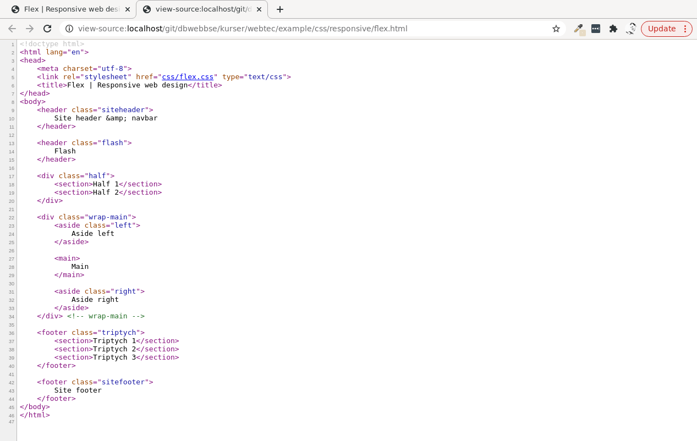
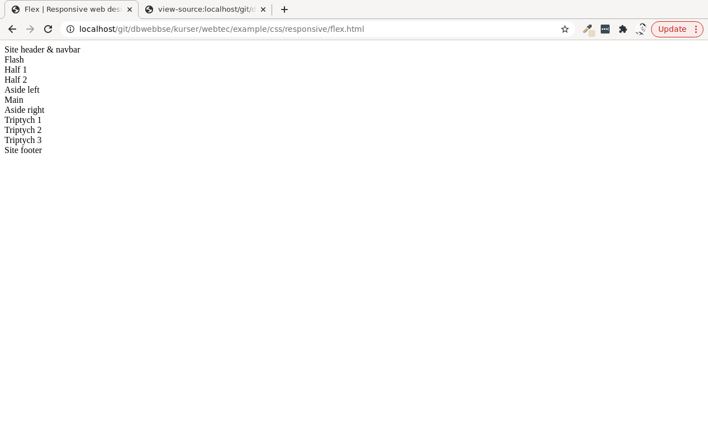
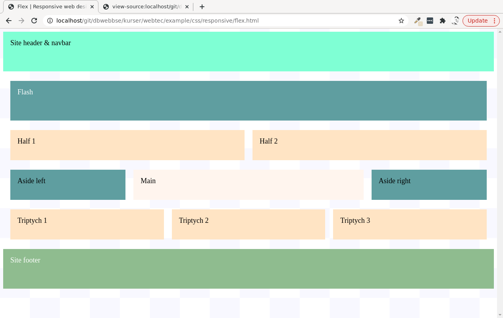
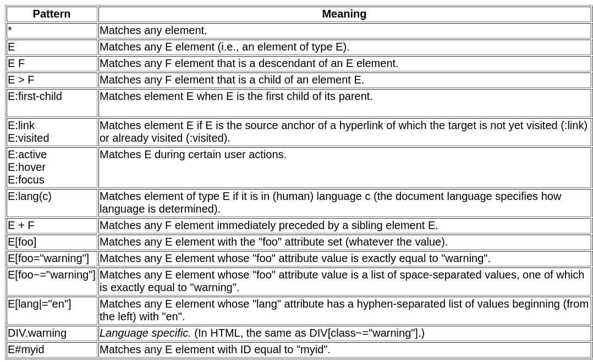
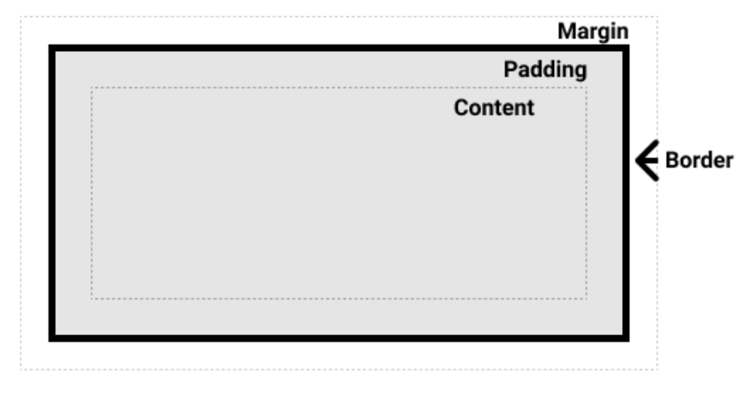
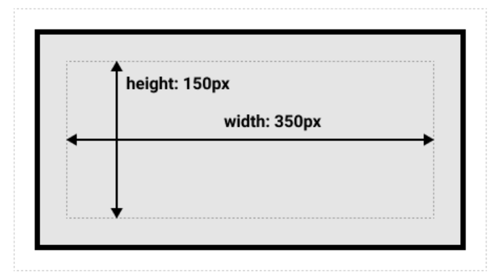
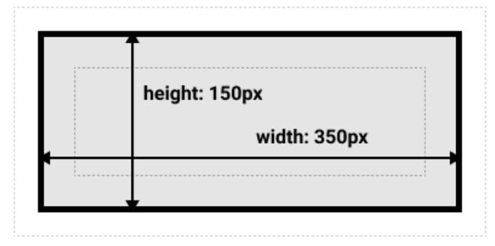

<!doctype html>
<html class="theme-5">
<meta charset="utf-8" />
<link href="../html-slideshow.bundle.min.css" rel="stylesheet" />
<link href="../style.css" rel="stylesheet" />
<script src="https://dbwebb.se/cdn/js/html-slideshow_v1.1.0.bundle.min.js"></script>

<title>CSS - Standard, constructs and structure</title>

<script data-role="slide" type="text/html" data-markdown class="titlepage center">
# CSS
## Standard, constructs and structure
### Mikael Roos
</script>


<script data-role="slide" type="text/html" data-markdown>
# Agenda

* CSS Cascading Style Sheets
* Standard
* Structure
* Constructs

</script>


<script data-role="slide" type="text/html" data-markdown class="titlepage center">
# CSS

> "Cascading Style Sheets (CSS) is a simple mechanism for adding style (e.g., fonts, colors, spacing) to Web documents."

</script>


<script data-role="slide" data-markdown type="text/html" class="center">
# HTML source
<figure>
    
    <figcaption>This is the HTML source for a document, viewed in a web browser.</figcaption>
</figure>
</script>


<script data-role="slide" data-markdown type="text/html" class="center">
# HTML no style
<figure>
    
    <figcaption>This is how the browser renders and presents the HTML document when no style is added.</figcaption>
</figure>
</script>


<script data-role="slide" data-markdown type="text/html" class="center">
# HTML with style
<figure>
    
    <figcaption>Style is added and this is how it can look. Add other style to change its presentation.</figcaption>
</figure>
</script>


<script data-role="slide" type="text/html" data-markdown class="titlepage center">
# Standard
</script>


<script data-role="slide" type="text/html" data-markdown>
# The Standard

> "CSS is both a standard and a technology in development."

* Initially all CSS in one specification, up to CSS Level 2
* CSS Level 3 have a modular approach
* Different modules are at different stages in the process
* CSS Snapshot 2020 (or later) provides an entrypoint to the specs

<p class="footnote">Latest snapshot of the CSS specification<br>https://www.w3.org/TR/CSS/</p>

</script>


<script data-role="slide" type="text/html" data-markdown>
# CSS 2

* Cascading Style Sheets Level 2 Revision 1
* Work started 2004
* Published as recommendation 2011
* The base for how CSS works
* CSS 2 Revision 2
    * Started 2016
    * First Public Working Draft
    * "corrects a few errors in CSS 2.1"

<p class="footnote">https://www.w3.org/TR/CSS2/</p>

</script>


<script data-role="slide" type="text/html" data-markdown>
# CSS 3 modules

* Modules that are "Completed"

```
CSS Color Level 3                       CSS Namespaces
Selectors Level 3                       Media Queries
CSS Cascading and Inheritance Level 3   CSS Style Attributes
CSS Fonts Level 3                       CSS Writing Modes Level 3
CSS Basic User Interface Level 3        CSS Containment Level 1
```

<p class="footnote">See it all at "CSS current work"<br>https://www.w3.org/Style/CSS/current-work</p>

</script>


<script data-role="slide" type="text/html" data-markdown>
# CSS 3 modules...

* Modules that are "Stable"

```
CSS Backgrounds and Borders Level 3
CSS Conditional Rules Level 3
CSS Multi-column Layout Level 1
CSS Values and Units Level 3
CSS Flexible Box Layout Level 1
CSS Counter Styles Level 3
```

<p class="footnote">Then there are modules in "Testing", "Refining", "Revising", "Exploring", "Rewriting" and "Abandonded".</p>

</script>


<script data-role="slide" type="text/html" data-markdown>
# CSS Levels

* CSS Level 1
    * The CSS Working Group considers the CSS1 specification to be obsolete.
* CSS Level 2
    * CSS2.1 specification defines CSS Level 2
    * A monolitic specification

</script>


<script data-role="slide" type="text/html" data-markdown>
# CSS Levels...

* CSS Level 3
    * A modulare approach
    * CSS Level 3 builds on CSS Level 2 module by module, using the CSS2.1 specification as its core
    * Each module adds functionality and/or replaces part of the CSS2.1 specification
* CSS Level 4 and beyond
    * There is no CSS Level 4
    * Individual modules can reach level 4 or more

</script>


<script data-role="slide" type="text/html" data-markdown class="titlepage center">
# CSS Basics
</script>


<script data-role="slide" type="text/html" data-markdown>
# Simple web page

```
<!doctype html>
<html>
  <head>
    <title>Bach's home page</title>
  </head>
  <body>
    <h1>Bach's home page</h1>
    <p>Johann Sebastian Bach was a prolific composer.</p>
  </body>
</html>
```

```
h1 { color: red }
```

<p class="footnote">Where to add the CSS?</p>

</script>


<script data-role="slide" type="text/html" data-markdown>
# External

```
<!doctype html>
<html>
  <head>
    <title>Bach's home page</title>
    <link rel="stylesheet" href="style.css" type="text/css">
  </head>
  <body>
    <h1>Bach's home page</h1>
    <p>Johann Sebastian Bach was a prolific composer.</p>
  </body>
</html>
```

<p class="footnote">This is normally the preferred way.</p>

</script>


<script data-role="slide" type="text/html" data-markdown>
# External...

`style.css`

```
/*
 * This is a comment.
 */
h1 {
    color: red;
}
```

</script>


<script data-role="slide" type="text/html" data-markdown>
# Embed in document

```
<!doctype html>
<html>
  <head>
    <title>Bach's home page</title>
    <style>
        h1 { color: green; }
    </style>
  </head>
  <body>
    <h1>Bach's home page</h1>
    <p>Johann Sebastian Bach was a prolific composer.</p>
  </body>
</html>
```

<p class="footnote">Embed the style in the HTML document using the <code>&lt;style&gt;</code> element.</p>

</script>


<script data-role="slide" type="text/html" data-markdown>
# Embed in element

```
<!doctype html>
<html>
  <head>
    <title>Bach's home page</title>
  </head>
  <body>
    <h1 style="color: yellow">Bach's home page</h1>
    <p>Johann Sebastian Bach was a prolific composer.</p>
  </body>
</html>
```

<p class="footnote">Embed within the HTML element using the <code>&lt;style&gt;</code> attribute.</p>

</script>


<script data-role="slide" type="text/html" data-markdown>
# Which rule is used?

* External<br>`h1 { color: red }`
* Embedded document<br>`<style>h1 { color: green }</style>`
* Embedded element<br>`<h1 style="color: yellow">`
* Important<br>`h1 { color: black !important }`

<p class="footnote">The rule closest to the element will decide, or <code>!important</code> overrules them all.</p>

</script>


<script data-role="slide" type="text/html" data-markdown>
# CSS rule

```
selector { property: value; property: value }

selector,
selector {
    property: value;
    property: value
}
```

```
h1,
h2
 {
    color: red;
    background-color: blue;
    border: 1px solid green;
    padding: 1em 2em 3em 4em;
}
```

</script>


<script data-role="slide" type="text/html" data-markdown>
# CSS selectors

General

```
#id { property: value; property: value }
.class { property: value; property: value }
element { property: value; property: value }
```

In the HTML code

```
<p id="myid">Hi there.</p>
<p class="myclass">Having fun?</p>
<p>Sure thing!</p>
```

<p class="footnote">Use classes for most styling, whenever you have a larger website.</p>

</script>


<script data-role="slide" data-markdown type="text/html" class="center">
# Selectors
<figure>
    
    <figcaption>Various CSS selectors to pinpoint parts of the elements in the document.</figcaption>
</figure>
</script>


<script data-role="slide" type="text/html" data-markdown>
# Grouping

```
h1 { font-family: sans-serif }
h2 { font-family: sans-serif }
h3 { font-family: sans-serif }
```

is the same as

```
h1, h2, h3 { font-family: sans-serif }
```

</script>


<script data-role="slide" type="text/html" data-markdown>
# Universal selector

```
* { box-sizing: border-box; }
```

</script>


<script data-role="slide" type="text/html" data-markdown>
# Type selector

```
h1 { font-family: sans-serif }
```

</script>


<script data-role="slide" type="text/html" data-markdown>
# Descendant selectors

```
h1 { color: red }
em { color: red }
h1 em { color: blue }
```

```
<h1>This headline is <em>very</em> important</h1>
```

<p class="footnote">The third rule will match the "very" fragment.</p>

</script>


<script data-role="slide" type="text/html" data-markdown>
# Child selectors

All p elements that are children of `main`

```
main > p { line-height: 1.3 }

main > p:first-child { font-wight: bold }
```

```
<main>
    <p></p>
    <p></p>
</main>
```

<p class="footnote">Use the pseudo-class <code>:first-child</code> to only math the first child.</p>

</script>


<script data-role="slide" type="text/html" data-markdown>
# Adjacent sibling selectors

When a h2 is immediately followed by a h1, set the style on the h2

```
h1 + h2 { margin-top: -0.5em }
```

```
<h1></h1>
<h2></h2>
```

<p class="footnote">Useful when styling depending on relations beween elements.</p>

</script>


<script data-role="slide" type="text/html" data-markdown>
# Attributes

```
[att]           [att=val]
[att~=val]      [att|=val]
```

```
h1[title] { color: blue; }
a[href="http://www.w3.org/"] { color: blue; }
span[class=example] { color: blue; }
```

```
<h1 title="Hi">Blue</h1>
<a href="http://www.w3.org/">Blue</a>
<p>Test is <span class="example">blue</span>
```

<p class="footnote">Style elements depending on their HTML attributes and attributes values. For example, all links to a pdf (ending with .pdf) should have a different style.</p>

</script>


<script data-role="slide" type="text/html" data-markdown>
# Class selectors

```
.pastoral   { color: green } /* elements with class~=pastoral */
h1.pastoral { color: green } /* h1 elements with class~=pastoral */
p.blue.pastoral { color: blue }
```

```
<h1>Not green</h1>
<h1 class="pastoral">Very green</h1>
<p class="pastoral">All green text</p>
<p class="pastoral blue">All blue text</p>
```

</script>


<script data-role="slide" type="text/html" data-markdown>
# Id selectors

```
#chapter1 { text-align: center }
```

```
<h1>Not centered</h1>
<h1 id="chapter1">Centered text</h1>
```

<p class="footnote">Use class instead of id for styling. Id may be useful for linking to a part of a page or when using JavaScript.</p>

</script>


<script data-role="slide" type="text/html" data-markdown>
# Pseudo classes/elements

* Permit formatting based on information that lies outside the document tree
* Pseudo-elements
    * Abstractions about the document tree beyond those specified by the document language
* Pseudo-classes
    * Classify elements on characteristics that cannot be deduced from the document tree

<p class="footnote">For example :first-line (pseudo-element) or :visited (pseudo-class).</p>

</script>


<script data-role="slide" type="text/html" data-markdown>
# Pseudo-classes

```
main > p:first-child { text-indent: 0 }
```

```
<main>
    <p>Matches this part.</p>
    <p>No effect here.</p>
</main>
```

* :first-child
* :link and :visited
* :hover, :active, and :focus
* :lang

</script>


<script data-role="slide" type="text/html" data-markdown>
# Pseudo-classes...

```
a:link    { color: red }    /* unvisited links */
a:visited { color: blue }   /* visited links   */
a:hover   { color: yellow } /* user hovers     */
a:active  { color: lime }   /* active links    */
```

<p class="footnote">Useful for styling links. The order of the rules above is important.</p>

</script>


<script data-role="slide" type="text/html" data-markdown>
# Pseudo-elements

```
article > p:first-line { font-weight: bold }
article > p:first-letter { font-size: 200% }
```

* :first-line
* :first-letter
* :before and :after

</script>


<script data-role="slide" type="text/html" data-markdown class="titlepage center">
# Cascading and Inheritance
</script>


<script data-role="slide" type="text/html" data-markdown>
# Inheritance

Some values are inherited by the children.

```
<H1>The headline <EM>is</EM> important!</H1>
```

The em inherits the color from the h1. If h1 is blue then em will be blue.

</script>


<script data-role="slide" type="text/html" data-markdown>
# Inheritance...

Force inheritance using `inherit`.

```
* {
  color: inherit !important;
  background: transparent !important;
}
```

* All elements will inherit the color
* Elements have a default behaviour

</script>


<script data-role="slide" type="text/html" data-markdown>
# Cascade

Style sheet origin

* Author (the page writer)
* User (the user browsing the site)
* User agent (the web browser default style)

<p class="footnote">The style may come from several places, which style is choosen?</p>

</script>


<script data-role="slide" type="text/html" data-markdown>
# Cascade order

1. "User agent" declarations
2. "User" normal declarations
3. "Author" normal declarations
4. "Author" important declarations
5. "User" important declarations
6. Specificity
7. Order (closest to the element)

<p class="footnote">Several declarations may match the same element, which style is choosen?</p>

</script>


<script data-role="slide" type="text/html" data-markdown>
# Specificity

A, B, C, D

1. A = defined in the style attribute
2. B = number of id attributes
3. C = number of attributes and pseudo-classes
4. D = number of elements and pseudo-elements

<p class="footnote">The calculations behind the element specificity and what declaration is choosen.</p>

</script>


<script data-role="slide" type="text/html" data-markdown>
# Specificity...

```
*             {} /* a=0 b=0 c=0 d=0 -> specificity = 0,0,0,0 */
li            {} /* a=0 b=0 c=0 d=1 -> specificity = 0,0,0,1 */
li:first-line {} /* a=0 b=0 c=0 d=2 -> specificity = 0,0,0,2 */
ul li         {} /* a=0 b=0 c=0 d=2 -> specificity = 0,0,0,2 */
ul ol+li      {} /* a=0 b=0 c=0 d=3 -> specificity = 0,0,0,3 */
h1 + *[rel=up]{} /* a=0 b=0 c=1 d=1 -> specificity = 0,0,1,1 */
ul ol li.red  {} /* a=0 b=0 c=1 d=3 -> specificity = 0,0,1,3 */
li.red.level  {} /* a=0 b=0 c=2 d=1 -> specificity = 0,0,2,1 */
#x34y         {} /* a=0 b=1 c=0 d=0 -> specificity = 0,1,0,0 */
style=""         /* a=1 b=0 c=0 d=0 -> specificity = 1,0,0,0 */
```

<p class="footnote">The more you specify the element, the more likely it is to get used. Highest specificity is used.</p>

</script>


<script data-role="slide" type="text/html" data-markdown class="titlepage center">
# Media types

```
@media print {
  body { font-size: 10pt }
}
@media screen {
  body { font-size: 13px }
}
@media screen, print {
  body { line-height: 1.2 }
}

@media (max-width: 1000px) {
    body {
        font-size: 16px;
    }
}
```

<p class="footnote">Different style depending on what media you view the page, for example print, screen, braille, speech.</p>

</script>


<script data-role="slide" type="text/html" data-markdown class="titlepage center">
# Box Model
## How large is the box?
</script>


<script data-role="slide" type="text/html" data-markdown>
# Box model parts

* Content box (width, height)
* Padding box (padding)
* Border box (border)
* Margin box (margin)

<p class="footnote">Each element is displayed using the box model. This MDN article explains the box model<br>https://developer.mozilla.org/en-US/docs/Learn/CSS/Building_blocks/The_box_model</p>

</script>


<script data-role="slide" data-markdown type="text/html" class="center">
# Box model
<figure>
    
    <figcaption>Each part takes up some space when rendered, sum up to the total size of the element.</figcaption>
</figure>
</script>


<script data-role="slide" type="text/html" data-markdown>
# Standard CSS box model

How large (height, width) is the box?

(margins take up space when rendered, but is not counted as the size of the box)

```
.box {
  width: 350px;
  height: 150px;
  padding: 25px;
  border: 5px solid black;
  margin: 10px;
}
```

<p class="footnote">Actual box rendered as:<br>width = 350 + 25*2 + 5*2 = 410px<br>height = 150 + 25*2 + 5*2 = 210px</p>

</script>


<script data-role="slide" data-markdown type="text/html" class="center">
# Standard CSS box model...
<figure>
    
    <figcaption>The margin is not counted towards the actual size of the box — sure, it affects the total space that the box will take up on the page, but only the space outside the box. The box's area stops at the border — it does not extend into the margin.</figcaption>
</figure>
</script>


<script data-role="slide" data-markdown type="text/html" class="center">
# Alternate CSS box model
<figure>
    
    <figcaption>Using this model, any width is the width of the visible box on the page, therefore the content area width is that width minus the width for the padding and border. The same CSS as used above would give the below result (width = 350px, height = 150px).</figcaption>
</figure>
</script>


<script data-role="slide" type="text/html" data-markdown>
# Always alternate model

```
html {
  box-sizing: border-box;
}

*, *::before, *::after {
  box-sizing: inherit;
}
```

<p class="footnote">Above code can be used in the stylesheet to always use the alternate box model as "border-box".</p>

</script>


<script data-role="slide" type="text/html" data-markdown>
# Collapsing margins

* Two boxes, each having a margin, rendered next to each other
* Box one has `margin: 10px`
* Box two has `margin: 5px`
* Resulting margin width is the maximum of the collapsing margins' widths

<p class="footnote">Adjoining margins of two or more boxes can combine to form a single margin. Margins that combine this way are said to collapse, and the resulting combined margin is called a collapsed margin.</p>

</script>


<script data-role="slide" type="text/html" data-markdown class="titlepage center">
# Visual formatting model
</script>


<script data-role="slide" type="text/html" data-markdown>
# Visual formatting model

When the page is rendered, boxes are produced, according to a layout.

* Box dimensions and type (block, inline, inline-block)
* Positioning scheme (normal flow, float, absolute)
* Relationship between elements
* External info (viewport, images)
* Containing blocks (generated boxes act as containing blocks for descendant boxes)

<p class="footnote">Web is normally "continous media" and not "paged media".<br>A box is rendered depending on its surroundings.</p>

</script>


<script data-role="slide" type="text/html" data-markdown>
# Types of boxes

Each "box" element has a display property, stating how its rendered.

```
p.hide  {display: none;}
em      {display: inline;}
p       {display: block;}
img     {display: inline-block;}
```

<p class="footnote">These a the ordinary ways to display a box, but several more exists (more than 20), for example list-item, flex, grid and table.</p>

</script>


<script data-role="slide" type="text/html" data-markdown>
# Positioning schemes

In CSS 2.1, a box may be laid out according to three positioning schemes:

* Normal flow (block, inline and relative positioning)
* Floats
* Absolute positioning

<p class="footnote">Newer ways to positioning the boxes are for example flexbox and grid.</p>

</script>


<script data-role="slide" type="text/html" data-markdown>
# Visual effects

CSS properties affecting how the content is viewable.

* overflow
* clip
* visibility

</script>


<script data-role="slide" type="text/html" data-markdown>
# More CSS

* Generated content, numbering and lists
* Paged media
* Colors and Backgrounds
* Fonts
* Text
* Tables
* User interface

</script>


<script data-role="slide" type="text/html" data-markdown class="titlepage center">
# Resources

* Guides like MDN and W3Schools are good ways to get going
* Specifications are a bit hard to grasp initially, without examples and context

</script>


<script data-role="slide" type="text/html" data-markdown>
# Industry matters

* CSS is the main language to style web pages/content and building user interfaces for user interaction
* SASS/LESS are example on high-level languages with more features that transpile down to CSS

</script>


<script data-role="slide" type="text/html" data-markdown>
# Research matters

* CSS is a technique and a standard driven by a standardisation organisation
* Research is not solely done on such technique
* You need to add an aspect of CSS to make it more researchable
    * User experience
    * Performance
    * How to use it

</script>


<script data-role="slide" type="text/html" data-markdown>
# Research matters...

* CSS Framework Alternatives
* Responsive Web Design with HTML5 and CSS: Develop future-proof responsive websites using the latest HTML5 and CSS techniques
* 3D modeling is web programming
* Development of E-Healthcare Management System using PHP, Javascript and Cascading Style Sheets

<p class="footnote">Titles of research papers including CSS from 2017 and forward.</p>

</script>


<script data-role="slide" type="text/html" data-markdown>
# Summary

> "Cascading Style Sheets (CSS) is a simple mechanism for adding style (e.g., fonts, colors, spacing) to Web documents."

* The basics are easy to learn
* To master CSS would "take a lifetime" (roughly said)

</script>


<script data-role="slide" type="text/html" data-markdown class="titlepage center">
# The end
</script>


<script data-role="slide" type="text/html" data-markdown>
</script>

</html>
